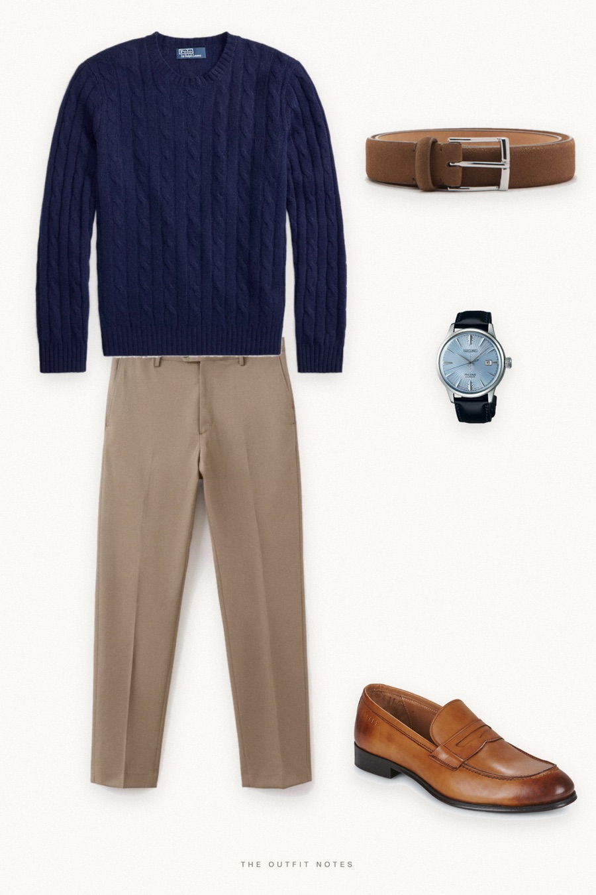
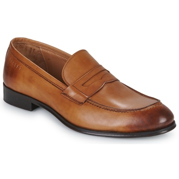

Boulevard Navy
cable knit, stone trousers, cognac loafers

A true old money outfit for men this fall: the Polo Ralph Lauren iconic cable-knit cashmere sweater in navy, Mango pleated virgin wool trousers in stone, Pellet Auguste cognac loafers and a brown suede belt. Finished with a Seiko Presage Cocktail Time watch. Quiet luxury menswear that looks expensive without trying.
The pieces
This page contains affiliate links: if you buy through them, we may earn a commission at no extra cost to you. Disclosure.
 Polo Ralph Lauren
Polo Ralph Lauren
Navy cable-knit cashmere sweater
Shop Mango
Mango
Stone pleated wool trousers
Shop
Pellet
Cognac calf loafers
Shop Mango
Mango
Brown suede belt
Shop Seiko
Seiko
Ice-blue dial dress watch
Shop
Prices are indicative, taken when the look was published, and may have changed. Pictures of the outfit are AI-generated illustrations of real products; the product photos are the retailers' own.
Published 1 October 2026.